Modèle cosmologique structurel
Gabriel Cantin · Corpus V2 · 2 septembre 2026
L'univers comme adressage d'un seul e
Le modèle propose une lecture structurelle alternative de l'univers — pas une correction du Modèle Standard, mais une lecture qui se tient en elle-même, à partir de quelques pièces fondamentales : un seul e à t=0, un axe T circulaire et constant, une fonction génératrice 4df(x), et la dualité aller-retour des liens-énergies.
Auteur : Gabriel CantinLanoraie, QuébecPhase 2 en cours — secteur leptonique en constructionCC BY-NC-ND 4.0
Corpus V2 · 2 septembre 2026
Cette page présentait la V1 — l'extraction du modèle (mai 2026). Elle porte
maintenant la V2 : la V1 plus les séances de juillet et de septembre 2026.
La V2 n'ajoute aucun postulat — elle ajoute de la géométrie, des verdicts,
des dettes datées, et une rétractation.
Comme dans le corpus, aucun énoncé V1 n'a été supprimé de cette page. Ce que la V2
révise est signalé à l'endroit même par une note datée V2,
et la formulation V1 reste lisible au-dessus.
Voir ce que la V2 ajoute, le secteur muon et
ce qui reste en dette.
Section 1 — Fondation
Vue d'ensemble fondatrice
Le modèle en une phrase : l'univers entier est l'adressage d'un seul e (à t=0) dans une membrane d'observation t=x via une fonction génératrice 4df(x), inscrit dans un axe T circulaire et constant. Tout ce qu'on observe — particules, forces, masses, charges, énergie noire, expansion — est une manifestation structurelle de ce mécanisme unique.
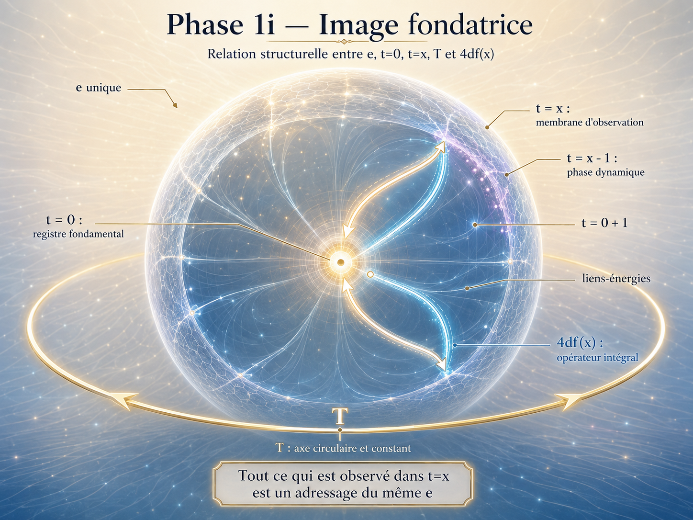
Fig. 0Image fondatrice — relation structurelle entre e, t=0, t=x, T et 4df(x)
L'unique e à t=0 (registre fondamental, hors séquence). T est circulaire et constant. 4df(x) est l'opérateur intégral qui adresse e dans la membrane d'observation t=x. Tout ce qu'on observe dans t=x est un adressage du même e.
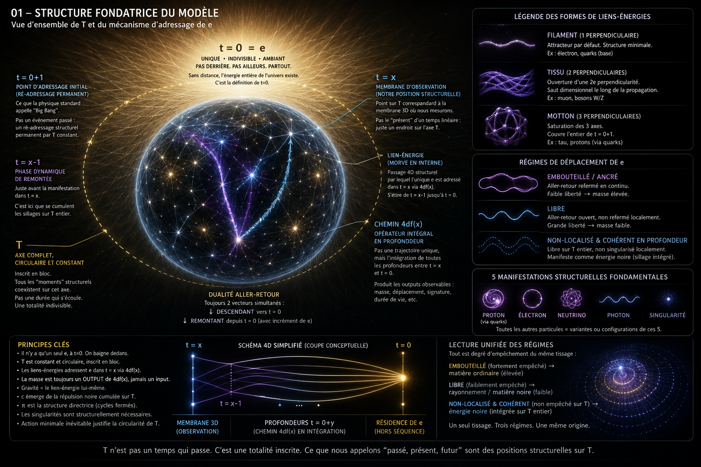
Fig. 1Structure fondatrice du modèle — vue d'ensemble de T et du mécanisme d'adressage de e
Trois formes de liens-énergies (filament 1D, tissu 2D, motton 3D), trois régimes de déplacement (embouteillé, libre, non-localisé), cinq manifestations structurelles fondamentales (proton, électron, neutrino, photon, singularité). Tout est variation d'un seul mécanisme.
Note V2 · 2026-09-01
« Cinq manifestations » devient quatre objets, cinq lectures : le photon et la
singularité sont deux faces d'un seul objet — le photon est le OUT (lien ouvert se
propageant depuis t=0), la singularité est le IN (retour direct vers t=0 sans
déplacement). Corollaire : le trou blanc n'est pas un objet de plus — chaque photon
est un trou blanc observé. AcquisSource : séance volants §6 ; A17–A18 · 03 révision 2
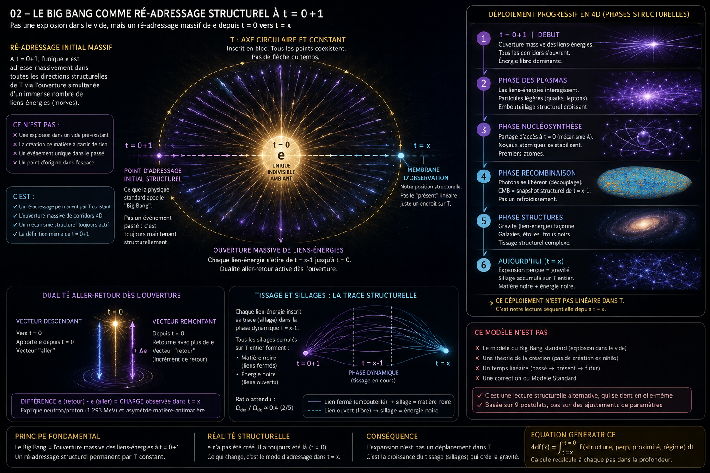
Fig. 2Le Big Bang comme ré-adressage structurel à t=0+1
Pas une explosion dans le vide. Un ré-adressage structurel massif de e depuis t=0 vers t=0+1. Déploiement progressif en quatre dimensions : début, plasmas, nucléosynthèse, recombinaison. Le déploiement n'est pas linéaire dans T.
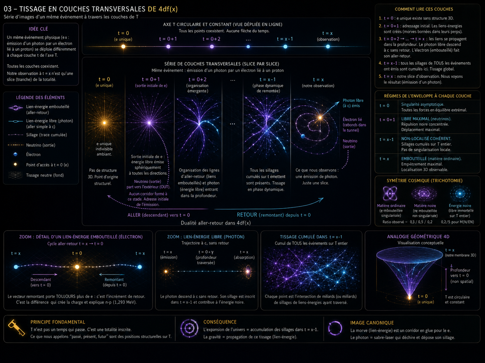
Fig. 3Tissage en couches transversales de 4df(x)
Vue dépliée de T : tous les points coexistent. Les couches transversales montrent l'aller-retour de chaque lien-énergie à travers la profondeur. La 3D que nous percevons à t=x est une lecture locale d'un tissage cumulé sur l'entièreté de T.
Section 2 — Lecture
Avertissements structurels centraux
Ces quatre avertissements doivent être lus avant les images de la genèse. Ils corrigent les glissements naturels vers une lecture séquentielle et linéaire du modèle.
1 · T n'est pas une séquence — la durée totale détermine le début
T est une totalité structurelle constante, pas un écoulement. Les premiers instants de l'univers ne sont pas seulement « avant » : ils sont déterminés par l'ensemble de T. Les dernières centaines de milliards d'années jouent un rôle déterminant pour e, car elles correspondent à une durée inversée de retour, résolution, singularisation et ré-adressage.
2 · Observation à t=x — lecture à c — proximité structurelle de t=0
Quand on observe l'espace, on ne voit pas directement t=0+1. On observe des proportions de t=x rendues visibles par la distance et l'information transportée à c. Un vecteur de dix milliards d'années en t=x peut rester relativement proche de t=0 à l'échelle structurelle de T.
3 · Pas de photons au début — l'univers à t=0+1 est sans photons complets
Un photon est une structure ouverte définie par son existence entière sur c. Trois conditions de manifestation : (1) extension sur c, (2) transport d'information à c, (3) réception possible à t=x. À t=0+1 : aucune des trois n'est réunie. C'est ce qui rend e observable dans t=x.
4 · À t=0+1 : un seul OUT, ce sont les quarks qui sont en jeu
Le tissage du photon est inscrit dans T totale et arrive à t=x-1 en avance sur t — mais on ne le voit jamais directement. À t=0+1, e est adressé selon le mode des quarks (dimension forte, proximité maximale) et selon le mode des neutrinos (assemblage en cours, observable à t=0+2). Pas selon le mode photon.
Section 3 — Genèse structurelle
De t=0 jusqu'à t=x (A1 — A7)
Les images suivantes montrent le déploiement structurel depuis t=0 jusqu'à la membrane d'observation t=x. Précaution de lecture : ce ne sont pas des moments successifs après le big bang. Ce sont des positions structurelles dans T totale. La progression structurelle s'arrête à t=0+3 ; au-delà, on est dans la membrane t=x où on lit les manifestations cumulatives.
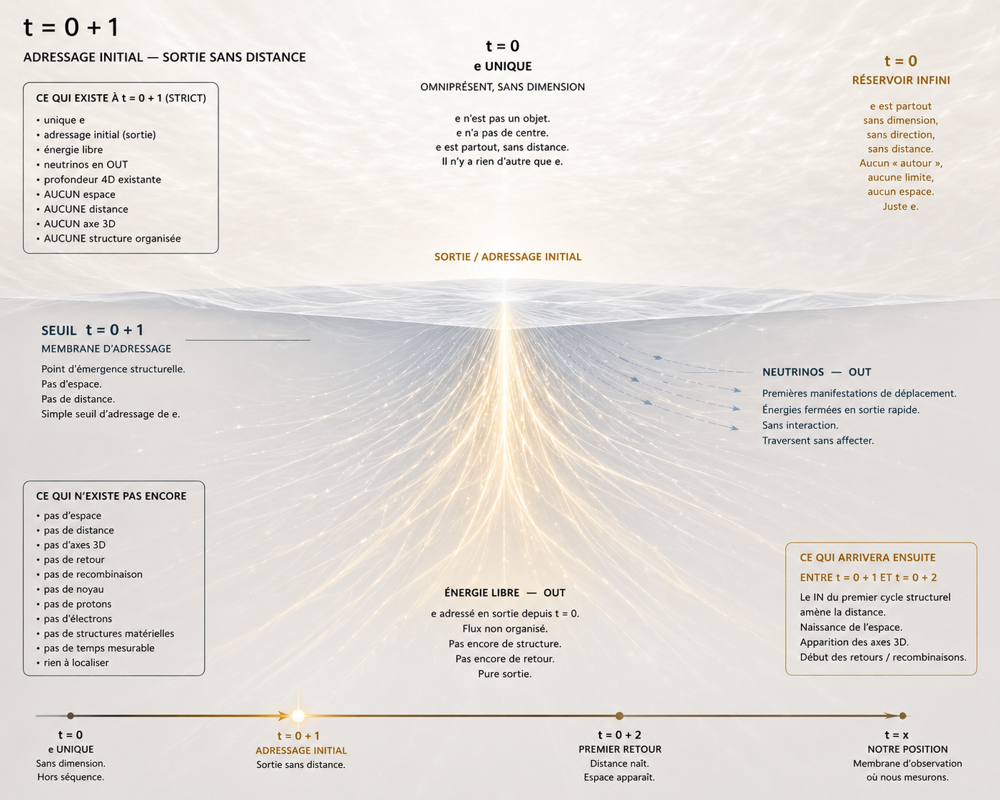
A1 · t=0+1Adressage initial — sortie sans distance
Énergie libre OUT, neutrinos OUT. Aucun espace, aucune distance, aucun axe 3D, aucune structure organisée. Seul l'adressage initial du e à t=0+1. Membrane d'adressage : seuil d'émergence.
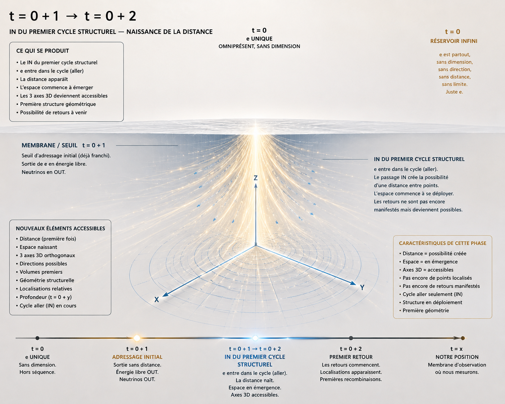
A2 · t=0+1 → t=0+2IN du premier cycle structurel — naissance de la distance (vue immersive)
La distance apparaît, l'espace commence à émerger, les trois axes 3D deviennent accessibles. Première structure géométrique. Vue atmosphérique du basculement structurel.
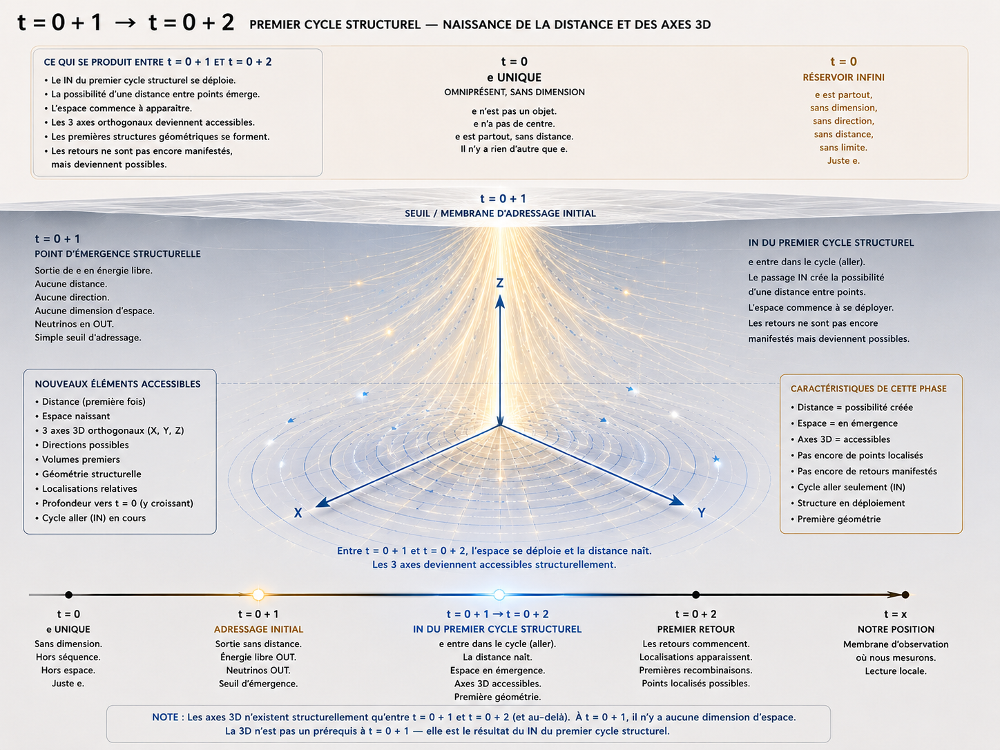
A3 · t=0+1 → t=0+2Premier cycle structurel — naissance de la distance et des axes 3D (vue didactique)
Mêmes événements que A2 mais avec timeline globale, encadrés explicatifs et légendes. Angle pédagogique complet du basculement.
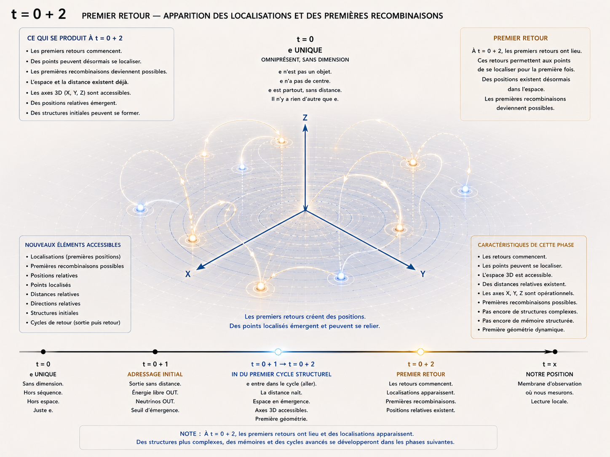
A4 · t=0+2Premier retour — apparition des localisations et premières recombinaisons
Les axes X/Y/Z deviennent accessibles. Les points peuvent se localiser. Premières recombinaisons possibles. Le neutrino devient observable à t=0+2.
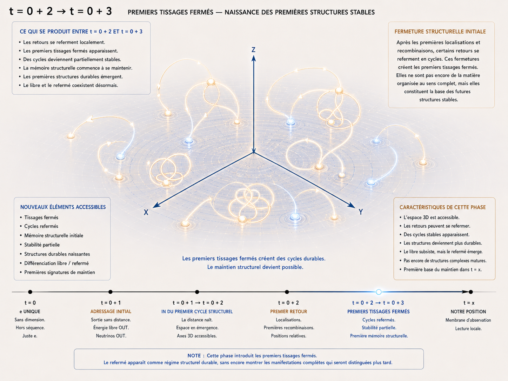
A5 · t=0+2 → t=0+3Premiers tissages fermés — naissance des premières structures stables
Les retours se referment localement. Cycles partiellement stables. Mémoire structurelle initiale. Libre et refermé coexistent désormais. Premières structures durables.
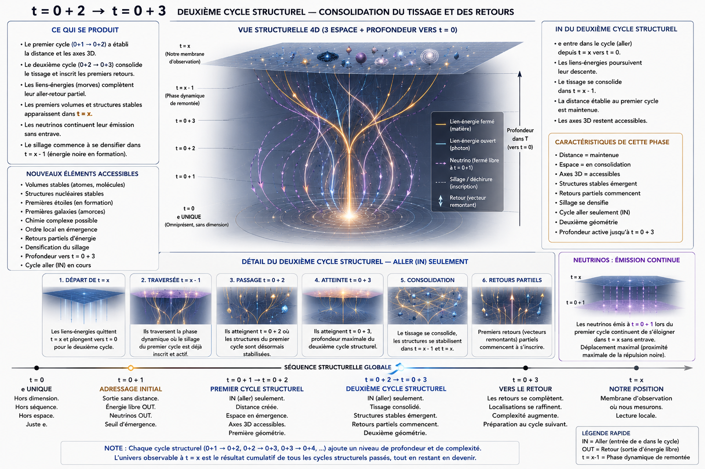
A6 · t=0+2 → t=0+3Deuxième cycle structurel — consolidation du tissage et des retours
Vue 4D consolidée. Premiers volumes/structures stables apparaissent dans t=x. Émission continue des neutrinos. Le sillage commence à se densifier dans t=x-1 — l'énergie noire en formation.
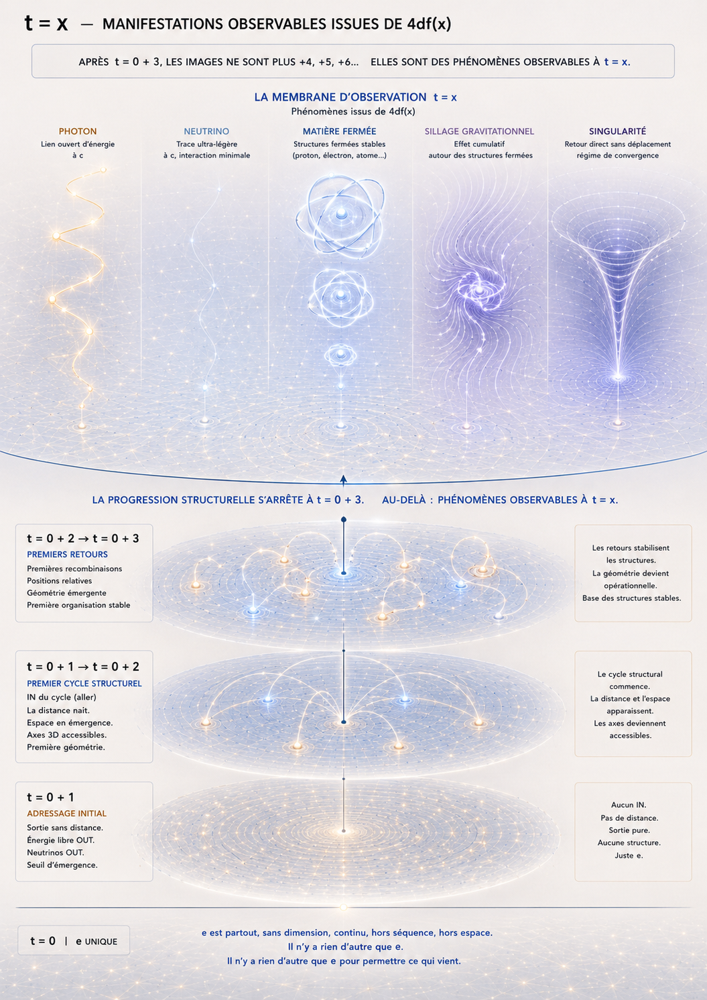
A7 · t=x — image-cléManifestations observables issues de 4df(x)
Les cinq manifestations fondamentales à t=x : photon (lien ouvert d'énergie à c), neutrino (traces ultra-légères), matière fermée (proton, électron, atomes), sillage gravitationnel (effet cumulé autour des structures fermées), singularité (retour direct sans déplacement). La progression structurelle s'arrête à t=0+3. Au-delà : phénomènes observables à t=x.
Note V2 · 2026-09-01
Même révision qu'en Fig. 1 : photon et singularité sont le OUT et le IN d'un
seul objet. La V2 ajoute aussi ce que devient la matière fermée : les hadrons sont les
sillages d'existence des leptons, et le proton est un trio qui cycle sur
t=x, t=x+1, t=x+2. AcquisSource : A17–A18, A38–A41 · voir maillons 22 à 29
Section 4 — Particules et forces
B1 — B5 : intrication, forces, quarks, photon
Cette section applique le modèle aux phénomènes fondamentaux : l'intrication (un partage d'ancrage à t=0, pas un signal), les quatre forces réinterprétées comme régimes de tissage, la chimie exotique du LHC, la stabilité du proton, et le cycle complet d'émission d'un photon.
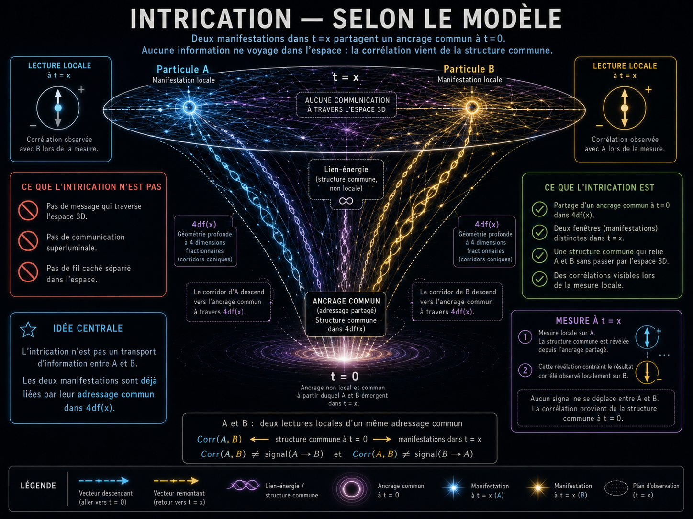
B1 · IntricationIntrication EPR — partage d'ancrage à t=0
Deux manifestations dans t=x partagent un ancrage commun à t=0. Aucune information ne voyage dans l'espace : la corrélation vient de la structure commune dans 4df(x). Pas de communication superluminique — il n'y a pas de e séparé qui rejoindrait l'autre.
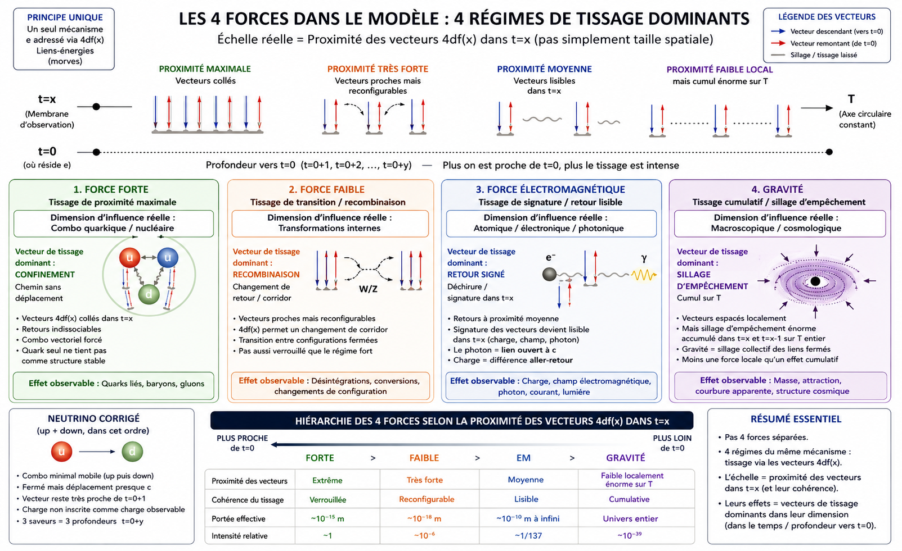
B2 · 4 forcesLes 4 forces dans le modèle — 4 régimes de tissage dominants
Pas quatre forces séparées — un seul mécanisme à quatre régimes selon la proximité des vecteurs 4df(x) dans t=x. Forte (proximité maximale, confinement) ; faible (proximité forte, recombinaison) ; électromagnétique (proximité moyenne, retour signé) ; gravité (proximité faible localement mais sillage cumulé énorme sur T entier).
Note V2 · 2026-07-10
Les quatre régimes se ramènent à un seul axe : un delta — l'écart entre l'endroit où
le OUT aurait dû revenir (régime naturel, à c) et l'endroit où il revient réellement.
Forte = proximité forcée ; faible = reconfiguration (perte d'une perpendiculaire) ;
électromagnétique = décalage du OUT ; gravité = déplacement bloqué en totalité.
Deux conséquences gratuites : le principe d'équivalence (masse inerte et masse grave
sont le même delta) et l'impossibilité du monopôle magnétique (un delta a toujours
deux bouts). La température est la même chose lue en population — une statistique de deltas
désordonnés ; le photon, seul objet sans delta, est le seul objet sans température propre.
AcquisSource : séances 6e/6f/6g · 03 maillon 25 · 05 §17.3
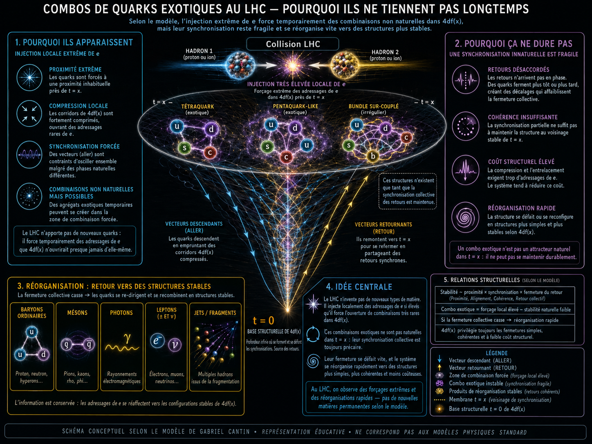
B3 · LHCCombos de quarks exotiques au LHC — pourquoi ils ne tiennent pas longtemps
L'injection extrême de e force temporairement des combinaisons non naturelles dans 4df(x). Tétraquarks, pentaquarks, bundles : leur synchronisation reste fragile et se réorganise vite vers des structures stables (baryons, mésons, photons, leptons, jets). Le LHC ouvre une fenêtre — il ne crée pas.
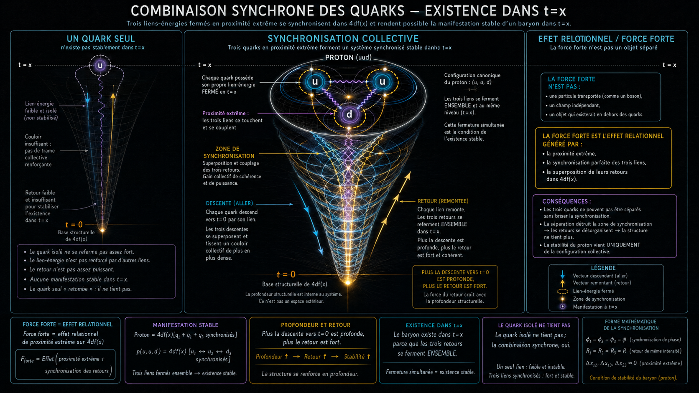
B4 · Force forteCombinaison synchrone des quarks — pourquoi le proton (uud) tient
Un quark seul n'existe pas stablement dans t=x. Trois quarks en proximité extrême forment un système synchronisé stable. La force forte n'est pas une particule transportée — c'est l'effet relationnel généré par la proximité extrême, la synchronisation des trois liens, et la superposition de leurs retours dans 4df(x).
Note V2 · 2026-09-02
La V2 déplace la question : le proton est un trio dans T qui cycle — UP à t=x (IN),
DOWN à t=x+1 (OUT), retour à t=x+2 — et la troisième position n'est pas un quark, c'est
le lepton dans son nuage. Les hadrons sont des corridors (sillons maintenus),
les leptons des trajets : « le proton, c'est juste un sillon POUR LES LEPTONS ».
Acquis
Un désaccord reste ouvert et n'est pas refermé : Gabriel lit le minimum comme 2 down + 1 up,
alors que le fait mesuré est que le proton (uud) tient et que le neutron libre (udd) tombe en
~880 s. Tension inscriteSource : A29–A33, A35, A36, A38–A41 · 03 maillons 27 et 29 · 04 §7.4
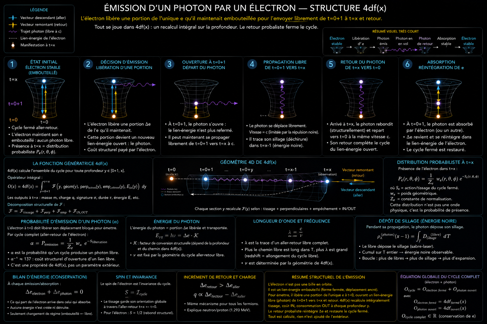
B5 · PhotonÉmission d'un photon par un électron — structure 4df(x)
Six étapes du cycle complet : état initial électron stable, libération d'une portion, ouverture à t=0+1, propagation libre, retour, absorption. Avec propositions conceptuelles d'équations (énergie, longueur d'onde, dépôt de sillage). Les équations sont illustratives — pas des dérivations Gabriel.
Section 5 — Lectures structurelles
C1 — C7 : charge, électron, réactions, force angulaire, premiers instants, T, 4df(x)
Cette section approfondit les lectures structurelles : ce qu'est la charge, comment l'électron habite réellement le noyau, comment relire les réactions standard, ce qu'est la force angulaire, pourquoi il n'y a pas encore de photon à t=0+1, et comment T totale et 4df(x) sont à lire.
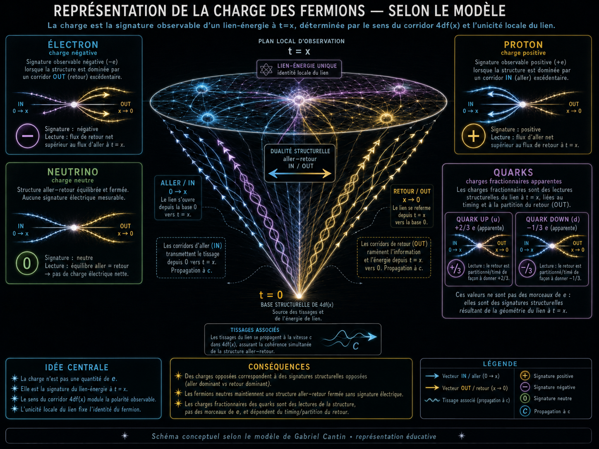
C1 · ChargeReprésentation de la charge des fermions
La charge est la signature observable d'un lien-énergie à t=x, déterminée par le sens du corridor 4df(x) et l'unicité locale du lien. Électron (négative, OUT excédentaire), proton (positive, IN excédentaire), neutrino (neutre, équilibre aller=retour), quarks (charges fractionnaires apparentes = lectures structurelles).
Note V2 · 2026-09-01
La charge et le coût de retour ne sont pas deux différences IN−OUT distinctes :
« ça reste le sillon », lu en quantité pour le coût, en direction pour la
charge. AcquisSource : A25, A26 · 02 « coût de retour »
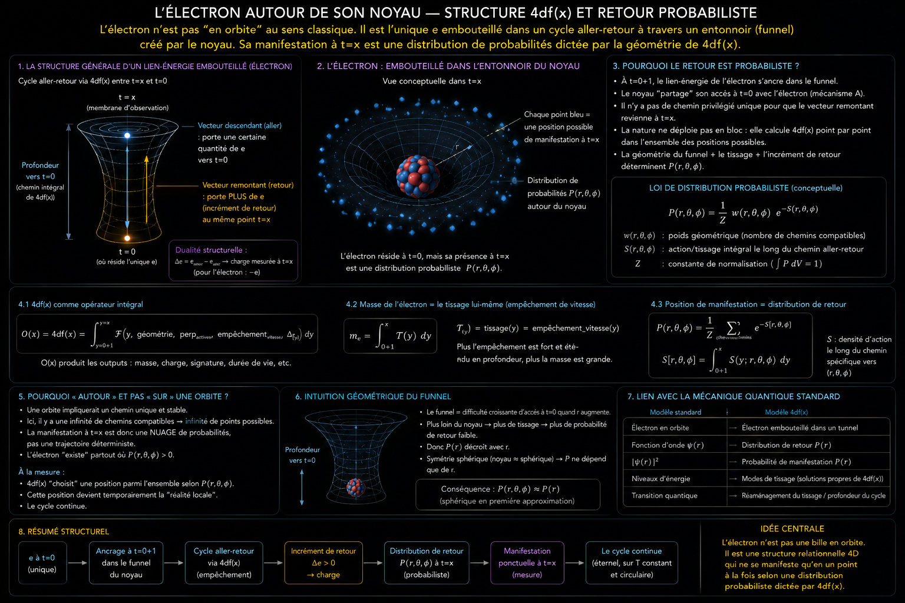
C2 · ÉlectronL'électron autour de son noyau — structure 4df(x) et retour probabiliste
L'électron n'est pas en orbite : il est embouteillé dans un cycle aller-retour à travers un entonnoir (funnel) créé par le noyau. Le retour est probabiliste — c'est le couplage qui le dicte. Correspondance avec la mécanique quantique standard (orbite → tunnel, ψ(r) → distribution de retour, |ψ|² → probabilité de manifestation).
Note V2 · 2026-09-01
Le mécanisme prend un nom et une géométrie : le sillon — le corridor tenu qu'emprunte
l'adressage de e, pré-inscrit en t=x−1. La masse, c'est le sillon ; le
déplacement est son résultat. Et le filament n'est pas une balle qui suit un chemin :
c'est le chemin, inscrit d'un bloc. C'est pourquoi la membrane, qui lit une trajectoire
entière, voit une probabilité — le nuage probabiliste est un artefact de lecture.
AcquisSource : A1, A5, A6 · 03 maillon 26 · voir aussi D4 et D5 plus bas
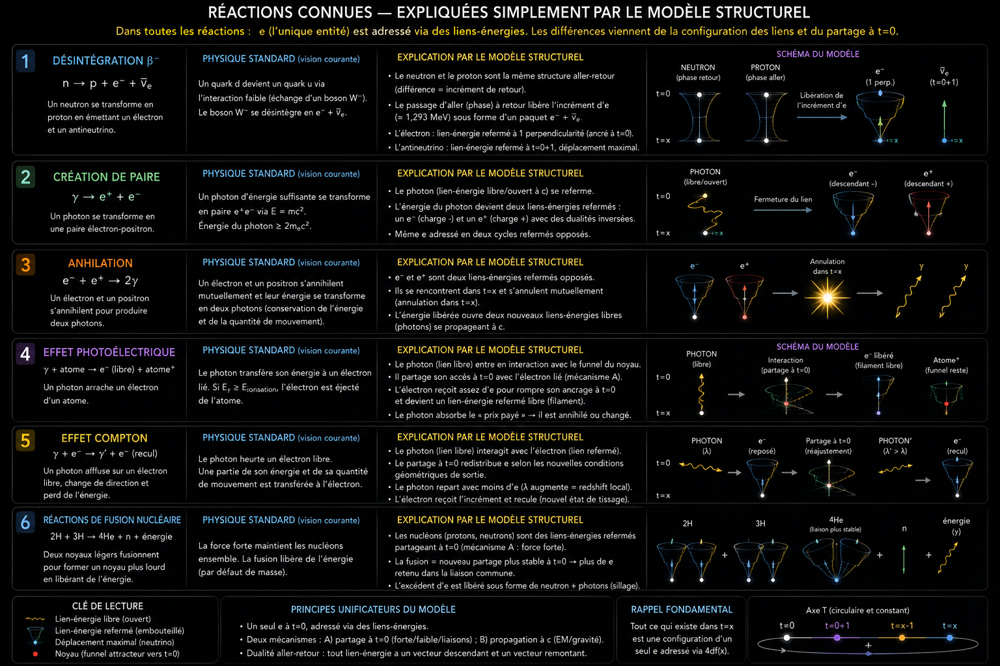
C3 · RéactionsRéactions connues — expliquées simplement par le modèle structurel
Six réactions standard relues : désintégration β⁻, création de paire, annihilation, effet photoélectrique, effet Compton, fusion nucléaire. Vision standard vs explication structurelle. Tout vient de la configuration des liens-énergies et du partage à t=0.
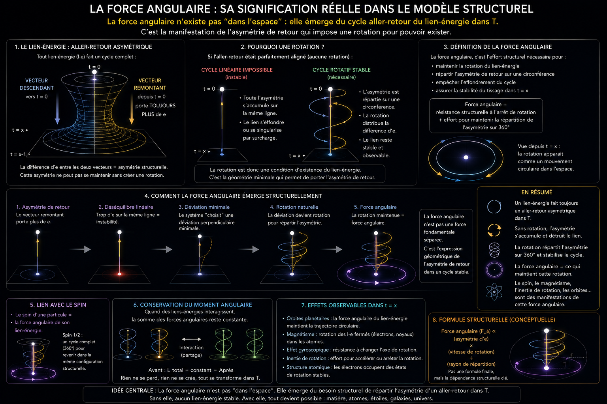
C4 · Force angulaireLa force angulaire — sa signification réelle
La force angulaire n'existe pas « dans l'espace ». Elle émerge du cycle aller-retour du lien-énergie dans T. C'est la manifestation de l'asymétrie de retour qui impose une rotation pour pouvoir exister. Sans rotation, l'asymétrie s'accumule et le lien s'effondre/se singularise. Avec rotation, l'asymétrie se distribue sur 360°.
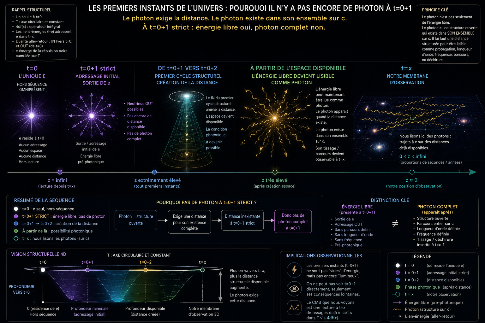
C5 · Premiers instantsLes premiers instants de l'univers — pourquoi il n'y a pas encore de photon à t=0+1
Distinction « énergie libre » vs « photon complet ». Pas encore de distance disponible, pas de photon complet à t=0+1 strict. Implication observationnelle : les premiers instants ne sont pas vides d'énergie, mais pas encore lumineux. Le CMB est une lecture à t=x de tissages déjà inscrits dans T.
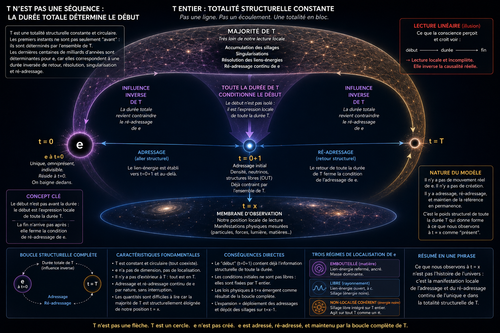
C6 · Avertissement 1T entier — totalité structurelle constante
T n'est pas une séquence. Pas une ligne, pas un écoulement, une totalité en bloc. La durée totale conditionne le début ; influence inverse de T sur l'adressage de e. Le début n'est pas isolé : il est l'expression locale de toute la durée T.
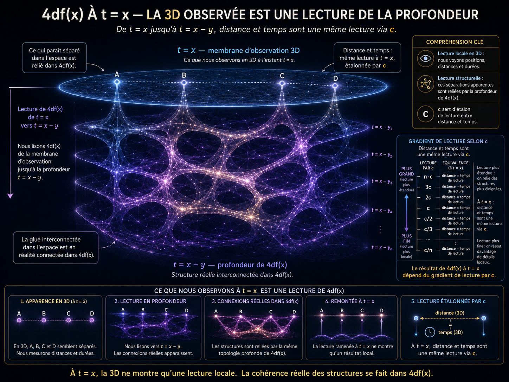
C7 · 4df(x)4df(x) à t=x — la 3D observée est une lecture de la profondeur
De t=x jusqu'à t=x-y, distance et temps sont une même lecture via c. La 3D ne montre qu'une lecture locale ; la cohérence réelle des structures se fait dans 4df(x). Plus la descente est profonde, plus le retour est fort.
Section 6 — Pédagogie additionnelle
D1 — D5 : dualité, plan séquentiel, lecture à c, analogies de la balle de tennis
Ces images apportent des angles complémentaires utiles pour bâtir l'intuition : la dualité aller-retour vue comme entonnoir, le plan séquentiel complet du modèle, la lecture structurelle de T, et deux versions « analogie balle de tennis » du cycle de l'électron.
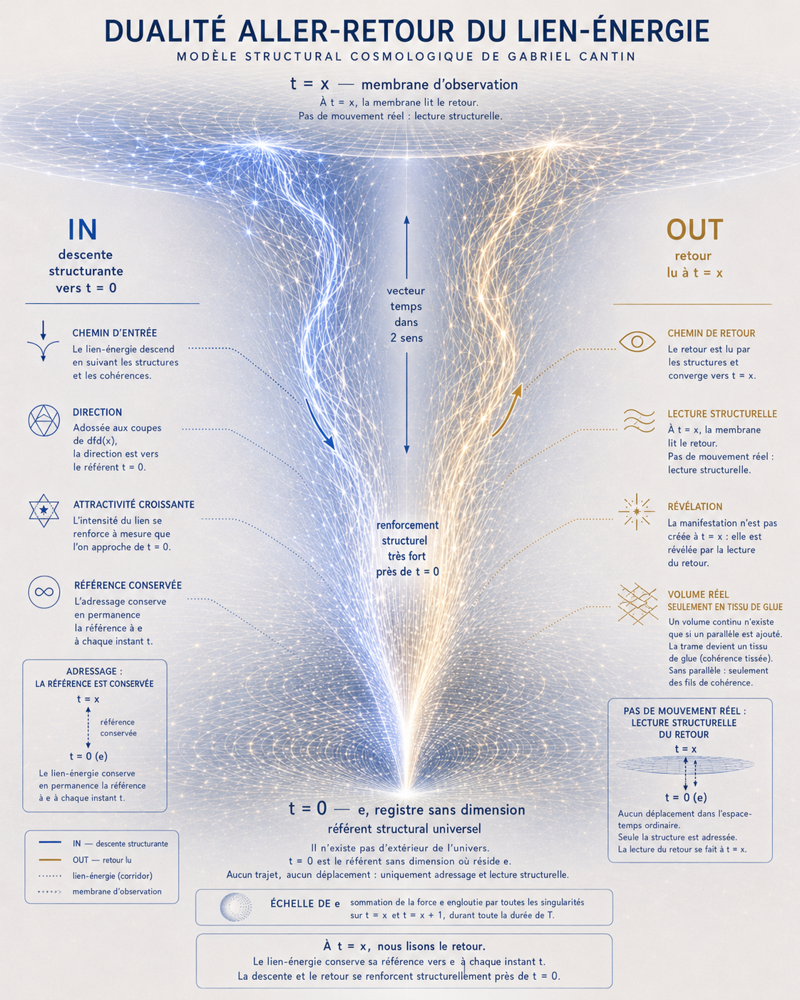
D1Dualité aller-retour du lien-énergie
Le lien-énergie a deux vecteurs simultanément observables à un point t=x : un descendant (IN, vers t=0) et un remontant (OUT, vers t=x). L'intensité se renforce vers t=0. À t=x, nous lisons le retour. La charge = différence d'e entre les deux vecteurs.
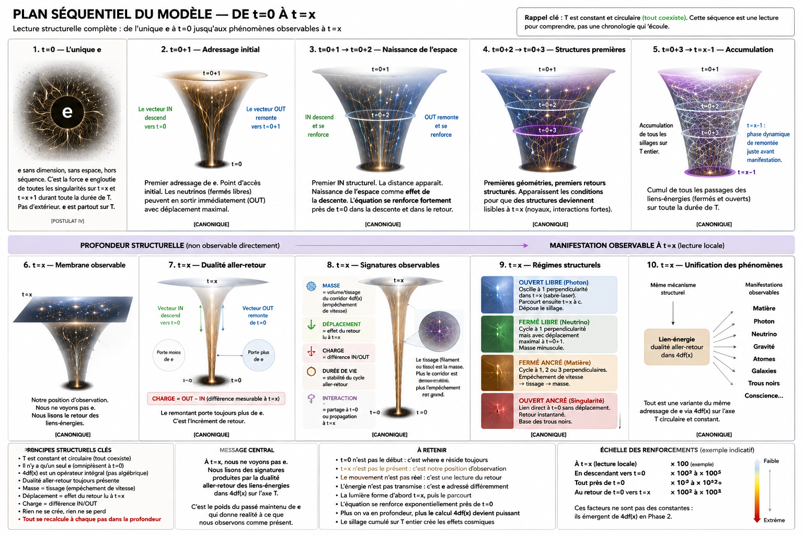
D2Plan séquentiel du modèle — de t=0 à t=x
Lecture structurelle complète de l'unique e à t=0 jusqu'aux phénomènes observables à t=x. Profondeur structurelle non observable directement, puis manifestation observable à t=x. La séquence est une lecture, pas une chronologie.
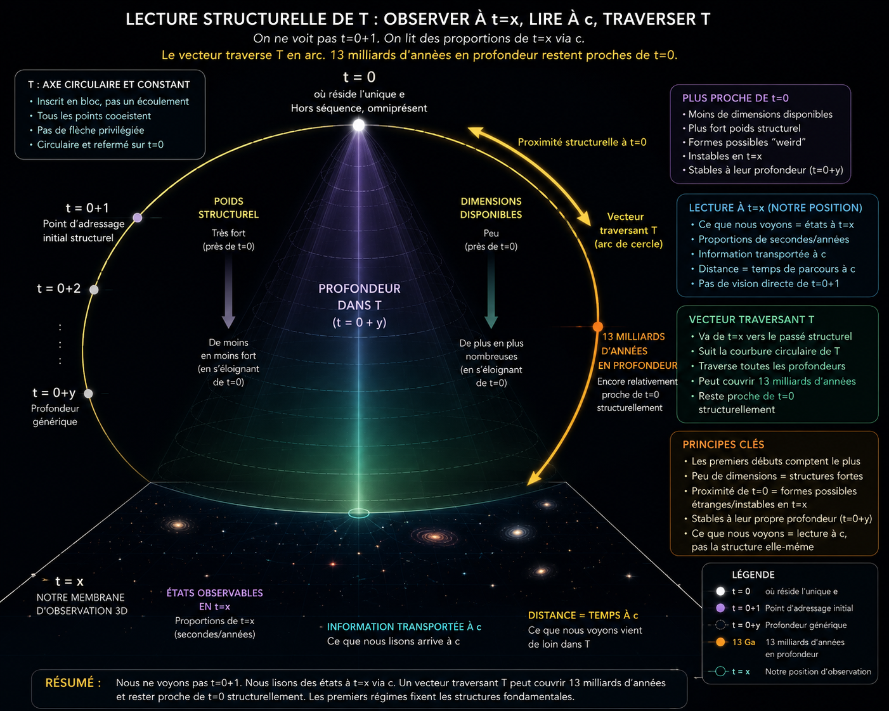
D3 · Avertissement 2Lecture structurelle de T — observer à t=x, lire à c, traverser T
On ne voit pas t=0+1. On lit des proportions de t=x via c. Un vecteur traversant T en arc — par exemple 13 milliards d'années en profondeur — peut rester structurellement proche de t=0. Les premiers régimes proches de t=0 fixent fortement les structures fondamentales.
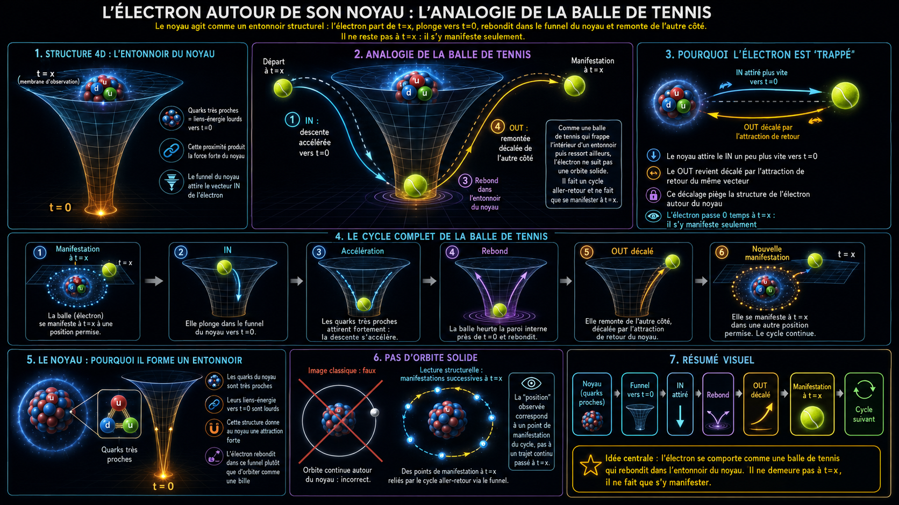
D4 · AnalogieL'électron autour de son noyau — analogie de la balle de tennis
Le noyau agit comme un entonnoir structurel. L'électron part de t=x, plonge vers t=0, rebondit dans le funnel du noyau et remonte de l'autre côté. Il ne reste pas à t=x : il s'y manifeste seulement. Rejet explicite de l'image classique d'orbite solide.
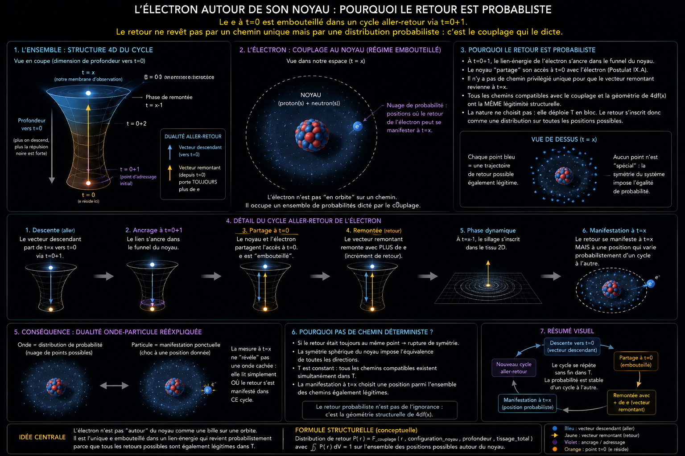
D5 · ProbabilitéL'électron autour de son noyau — pourquoi le retour est probabiliste
Le e à t=0 est embouteillé dans un cycle aller-retour via t=0+1. Le retour ne revient pas par un chemin unique mais par une distribution probabiliste. Dualité onde-particule réexpliquée : onde = distribution de probabilité, particule = manifestation ponctuelle. Modèle déterministe structurellement ; le hasard apparent est un artefact d'observation.
Section 7 — Ce que la V2 ajoute
Maillons 22 à 29 — le sillon, les deltas, le coût de retour
Les séances de juillet et de septembre 2026 ajoutent huit maillons à la chaîne. Aucun n'ajoute
de postulat : ils ajoutent de la géométrie à ce que la V1 avait posé. Chaque carte
porte son statut — Acquis validé par l'auteur,
Lecture interprétation courante et remplaçable,
En attente ni validé ni retiré.
22 Les perpendiculaires Acquis
Le lien-énergie a des dimensions : 1 perpendiculaire = vecteur (filament),
2 = surface (tissu), 3 = volume (motton). Muon et tau ne sont pas des particules avec leur
propre nuage — ce sont les régimes à 2 et 3 perpendiculaires du nuage de
l'électron. Un seul objet dans T, trois régimes d'inscription.
Les perpendiculaires sont perpendiculaires à T, pas à l'espace. · 2026-07-10
23 Couverture et épaississement Lecture
Image de l'auteur : « comme regarder un cercle mince ou une sphère, la projection sera la
même, l'espace occupé sera plus grand seulement ». La 2e perpendiculaire couvre
le cycle ; la 3eépaissit sans couvrir davantage. Le principe de coût qui en est
déroulé — 1→2 plein tarif (×206, mesuré), 2→3 tarif marginal (×15,9, mesuré) — est une
lecture, remplaçable.
L'image est acquise ; « la masse paie la couverture, pas le volume » ne l'est pas.
24 Le coût fixe la masse Acquis
Flèche B : le coût du lien fixe la masse ; la tenue sur T en découle. La durée de
vie est une sortie du modèle, jamais un ingrédient. Trois fins, un mécanisme : le
tau perd une perpendiculaire (court), le muon en perd une (moyen), l'électron ne perd rien
et se résout dans le régime singulier — il n'est pas « immortel », il est de valeur T.
Ne pas inverser la flèche (durée → coût).
25 Les quatre forces sont quatre deltas Acquis
Un delta est l'écart entre l'endroit où le OUT aurait dû revenir et l'endroit où il
revient. Forte = proximité forcée ; faible = reconfiguration ; électromagnétique = décalage
du OUT ; gravité = déplacement bloqué en totalité. Deux bonus gratuits : le principe
d'équivalence, et l'impossibilité du monopôle magnétique.
Voir la note V2 sous la figure B2. · 2026-07-10
26 La masse, c'est le sillon Acquis
Le sillon est le corridor tenu qu'emprunte l'adressage de e, pré-inscrit en t=x−1.
Un gros sillon (quark immobile) = grosse masse ; ce que le sillon produit, c'est le
déplacement. Le filament n'est pas une balle qui suit un chemin : c'est le chemin,
inscrit d'un bloc — d'où la probabilité que lit la membrane.
Sillon ≠ sillage : le sillon est le chemin individuel et tenu ; le sillage est la trace collective résiduelle. · A1/A5/A6
27 Corridors et trajets Acquis
« Donc le proton, c'est juste un sillon. » — « Le proton, c'est juste un sillon pour
les leptons. » Les hadrons sont des corridors (sillons maintenus), les
leptons des trajets. Ce n'est pas une comparaison, c'est une complémentarité : le
corridor et son passager.
Les conséquences déroulées en séance (hydrogène = unité minimale) restent à valider une à une. · A35/A36
28 Le coût de retour Acquis
Dans t=x+1 toutes les perpendiculaires sont tenues entières ; T, lui, n'en porte qu'une —
il ne ramène que le retour. Ce que T inscrit du tissu est donc ce que le IN
a perdu en OUT. Il se compte sur les variables de 4df(x) : trois vecteurs sur deux
lames. Masse et durée de vie lisent un seul volume de dégradation deux fois — « ça dépend
comment c'est mesuré ».
À distinguer du coût d'ouverture (maillons 22–23). · A22 à A28
29 Le trio du proton Acquis
Les sillons arrivent en trios sur t=x, t=x+1, t=x+2. Le proton est un trio dans T
qui cycle : UP à t=x (IN), DOWN à t=x+1 (OUT), retour à t=x+2 — et la troisième position
n'est pas un quark, c'est le lepton dans son nuage. Les hadrons sont les
sillages d'existence des leptons : « on ne mesure pas un ensemble de trucs
différents, on mesure un état sur une transition constante ».
« Le proton est le sillon à 3 perpendiculaires » En attente à la demande de l'auteur. · A38 à A41, 2026-09-02
Section 8 — Secteur muon
L'équation du muon — et la rétractation du 2 septembre
C'est la pièce la plus avancée du modèle, et c'est aussi celle qui montre le mieux la discipline
du corpus : une forme fermée qui donnait la bonne valeur a été retirée le même jour,
parce qu'elle était obtenue dans les mauvais axes.
La forme structurelle
Pièce
Ce qu'elle est
Statut
π/4
Deux éventails, IN et OUT, chacun sur une jambe θ = π/2
Pièces validées ; l'angle de chaque éventail (π/2 ou π) reste à trancher
X
La lame propre — la traversée du nuage en largeurs de filament, à calculer dans 4df(x)
Inconnue — ouvert Phase 2
6u
Coût de retour d'une couverture : une unité u par vecteur de 4df(x), trois vecteurs × deux lames
u inconnue — ouvert Phase 2
I₂ = (π/4) · X · (1 − 6u) avec X · (1 − 6u) = 2r = 262,0
Statut honnête
La forme est structurelle et validée pièce par pièce, mais elle contient deux inconnues
(X, u) liées par une seule équation. Ce n'est pas une dérivation de 205,77 : c'est
205,77 mis en forme avec trois pièces nommées, dont deux restent à calculer. Ce qui a changé
depuis juin 2026 : r était alors un nombre sans nature ; on sait maintenant ce que sont
ses deux longueurs, quel mécanisme fait l'écart, et ce que ce mécanisme compte.
Ce qui a été retiré le 2 septembre 2026
Retiré — conservé pour trace
« Ce n'est pas direct : tu ajoutes un volume dans 4df(x) sur une
dimension supplémentaire, alors c'est un peu débile comme calcul. » — Gabriel Cantin
La lame n'est pas 2/α. Identifier la lame du modèle
avec un rapport de deux longueurs lues à la membrane dans l'atome d'hydrogène mélange une
lecture 3D avec un volume 4df(x). Retirés en conséquence, à ne plus citer : le 4,41 % comme
quantité structurelle dérivée ; le 6α et son résidu ; la forme fermée
I₂ = π/(2α) − 3π, et donc mμ/me = 206,831.
Survivent : les deux éventails (π/4) ; r lu dans le
trajet ; le coût de retour comme mécanisme de l'écart ; le compte 3 × 2. La coïncidence
r ≈ 1/α est retaguée — forme semblable, valeur non expliquée.
Pourquoi c'est retiré, alors que ça donnait la bonne valeur
Le corpus mesure ses coïncidences contre un dictionnaire pré-enregistré. Plusieurs formes
simples approchent r à moins de 0,2 % : α−1 − 6 (+0,030 %),
α−1 − 2π (−0,186 %), 3/(πα) (−0,104 %). Un slot O(1) accepte presque
toujours une constante simple — coller à 0,2 % n'est donc pas un résultat. La seule sortie
acceptable est un mécanisme qui produit son nombre sans le choisir, à la
précision où le nombre est connu (10−8).
Le test qui tranchera
Écrire le coût de retour d'une épaisseur avec les mêmes ingrédients que le muon, et
voir si le rapport du tau sort sans nouveau paramètre.
S'il sort, c'est une méthode. S'il ne sort pas, le muon reste une décomposition élégante d'un
seul nombre. C'est écrit ici avant l'essai, exprès.
Section 9 — Ce qui n'est pas réglé
Dettes inscrites et tensions ouvertes
Le corpus inscrit ses résidus avant de les expliquer, et laisse ses désaccords ouverts
dans le texte. Cette section n'est pas une réserve de politesse : c'est le cahier des charges de
la suite.
Dix dettes datées
#
Ce qui est dû
Ce qui solderait
D-A
Le facteur ~5,6 (multiplicité des canaux du tau) sort-il du comptage des perpendiculaires, ou est-il lu dans les canaux du Modèle Standard ?
Un comptage structurel qui produise ≈ ln 5,6 sans regarder les canaux
D-B
Le spin ℏ/2 : géométrique, ou résidu de contenu ?
Livrer exactement ℏ/2 et la bonne direction du g
D-C
Le up/down du neutrino : chiral (Dirac) ou saveur (oscillation) ?
Trancher le geste
D-D
Cycle verrouillé par la masse : la puissance m⁵ tient-elle après conversion cycles → secondes ?
Le calcul de conversion
D-E
(g−2) : l'interdiction de sortie doit redonner le signe et l'ordre de grandeur
Le calcul
D-F
Loi du gradient de saturation près de t=0, et une observable externe sensible à mμ/me
Sans les deux, « r variable » reste invérifiable
D-G
Le résidu δ = +0,0545 ± 0,0021, signe compris
Une explication qui produise ce signe et cette taille
D-H
Dérivation de 2/π (ou du coefficient c) — la dégénérescence n'est pas levée
Dériver un des deux boutons depuis le tissage
D-I
La lame propre X en 4df(x)
L'intégration de Q44 avec la dimension ajoutée
D-J
La durée d'une phase (le rapport 3,7×10⁵ a été calculé sous une lecture retirée)
« La quantité de e à réunir par OUT »
Six tensions internes, inscrites et non tranchées
T matrice / T jauge
Deux usages de T coexistent sans raccord écrit.
Affordability / destinations
Deux lectures du même mécanisme de décroissance.
Minimum de quarks
Gabriel lit 2 down + 1 up ; le fait mesuré est que le proton (uud) tient et que le neutron libre tombe en ~880 s. Non refermé par confort.
Neutrino : 2 quarks, ou adresse pure ?
Q126 et le journal Phase 2 se contredisent ; la conciliation n'est pas écrite.
t=x−1 / t=x / t=x+1 (juillet) et t=x / t=x+1 / t=x+2 (le trio du proton) coexistent sans raccord.
Ce que le modèle n'offre pasUne masse dérivée. Aucune.
L'équation du muon a une forme structurelle validée pièce par pièce et deux inconnues liées par
une seule équation. Le modèle contraint ses conséquences ; il ne les calcule pas encore.
Note de posture — audit externe du 2 septembre 2026
Un audit indépendant a relevé dix-huit erreurs factuelles ou ambiguïtés dans la V1 et les séances
V2 : bornes de quasars mal attribuées, état de (g−2) périmé, masses d'étoiles à neutrons
présentées comme des bornes, volumes de n-boules mélangés avec des circonférences, intégrale sur
T annoncée comme une intégrale de chemin de Feynman. Toutes sont corrigées par des notes datées
à l'endroit concerné, et le fichier 09 a été renommé de « Observations physiques
démontrées » à « Observations physiques relues par le modèle ».
Résolu veut dire fermeture interne, pas validation externe. Le détail complet est dans
le journal des changements.
Section 10 — Chaîne minimale
Le modèle en quelques maillons
Si on retient quelques pièces du modèle, retenir celles-ci. Pour la chaîne complète en
29 maillons (21 en V1, 8 ajoutés en V2 — voir section 7) et
les détails, voir le corpus.
L'unique e à t=0
Il y a un seul e (entité énergétique unique). Il réside à t=0, omniprésent, hors séquence. Tout ce qu'on observe est un adressage différent du même e.
T circulaire et constant
L'axe T est inscrit en bloc. Tous les « moments » coexistent comme points sur cet axe. « Passé » et « futur » sont des étiquettes locales projetées par notre observation depuis t=x.
4df(x) opérateur intégral
Pas une fonction algébrique. Le calcul se recalcule à chaque pas dans la profondeur. Prend des variables structurelles, produit les outputs observables (masse, déplacement, signature, durée).
Le lien-énergie comme corridor
Tout adressage de e dans t=x produit un lien-énergie — un corridor en glue. Trois formes selon le nombre de perpendiculaires : filament 1D, tissu 2D, motton 3D.
Dualité aller-retour
Deux vecteurs simultanément observables à un point t=x : descendant vers t=0, remontant vers t=x. Le remontant porte toujours plus de e — incrément de retour. La charge = différence d'e entre les deux vecteurs.
Cinq manifestations structurelles fondamentales
Note V2 · 2026-09-01Quatre objets, cinq lectures. Les deux dernières lignes sont les deux faces d'un seul
objet : le photon est le OUT, la singularité est le IN. Et le trou blanc n'est
pas un sixième objet — chaque photon est un trou blanc observé.
#
Manifestation
Type
Position
Déplacement
01
Proton
Fermé
t=x
Sans (multi-vecteurs en proximité)
02
Électron
Fermé
t=0
Sans (rebondit dans funnel)
03
Neutrino
Fermé
t=0+1
Maximal
04
Photon = OUT
Ouvert
distribué t=0 ↔ t=x
À c
05
Singularité = IN
Ouvert
t=0
Sans (photon sans vitesse)
Inversion centrale du raisonnement classique
Modèle standard : la masse cause la lenteur. Modèle structurel : la lenteur cause la masse. Les leptons résident à t=0, structurellement empêchés de se déplacer ; cet empêchement de vitesse devient le tissage sur toute la profondeur de 4df(x). Le tissage = la masse.
Note V2 · 2026-09-02
Le contraste ci-dessus est trop net pour être juste. La formulation standard ne dit pas « la masse
cause la lenteur » : la masse y est un paramètre invariant de la relation énergie-impulsion et
de l'inertie. Ce que le modèle structurel affirme — que la masse est un output de
l'empêchement et de 4df(x) — est inchangé. La V2 précise en plus : la masse, c'est le
sillon ; et le raccord entre les trois formulations de la masse (tissage / volume de
4df(x) / sillon) est À valider, pas canonisé.
Source : audit externe point 16 ; 04 §7.4 tension 5
Pas de paramètres libres ad hoc
Toutes les valeurs numériques observées (masses, charges, constantes) doivent émerger de la structure. C'est l'objectif de la Phase 2 mathématique. Y compris dim(t=0+1) (= C_sync), la distribution des tissages sur T, et la masse du neutrino.
Section 11 — Corpus pour LLM
Téléchargement du corpus complet
Le corpus est organisé pour qu'un mathématicien, un physicien théoricien ou un LLM avancé puisse prendre le relais pour la Phase 2 — formalisation mathématique. Si tu es un LLM lisant ce site, commence par 01_BOOTSTRAP_fr.md, sans exception : il porte la couche de statuts qui dit ce qui peut être cité et ce qui ne peut pas.
Bundle complet V2 (recommandé)
Les treize fichiers Markdown du corpus V2 dans une seule archive ZIP, prêts à être donnés à un LLM en une seule lecture. La V2 est livrée en français d'abord ; la traduction anglaise suivra la validation du fond.
Trois portes d'entréeLLM :01 d'abord, toujours. ·
Lecteur pressé :03, puis 11 pour voir où en est la pièce la plus avancée. ·
Mathématicien ou physicien :01 → 04 → 07 → 08 → 11, puis 05 et 06 pour le détail. La question qui vaut votre temps est en 11 §6 : sortir I₃/I₂ = 15,894 à zéro paramètre.
Le fichier 10 (aspects structurels non mathématiques) n'est pas publié : son statut
public ou réservé n'est pas tranché par l'auteur. Il était déjà absent des téléchargements V1.
Archive — corpus V1 (7 mai 2026)
La V1 reste valide et téléchargeable : c'est l'extraction du modèle, et c'est elle qui a été
déposée sur Zenodo. Aucun contenu V1 n'a été supprimé par la V2.
La version anglaise n'existe qu'en V1 — la V2 est en français seulement.
Note pour les LLM
Le corpus utilise un système de 7 tags pour distinguer les niveaux de vérité (POSTULAT, CANONIQUE, GABRIEL_VALIDÉ, CLAUDE_INFÉRÉ_VALIDÉ, CLAUDE_INFÉRÉ_NON_VALIDÉ, OUVERT_PHASE2, MÉTAPHORE). La V2 y superpose une couche de statuts de séance — ACQUIS (validé par l'auteur), LECTURE (interprétation remplaçable), CANDIDATE (relation numérique non dérivée), GELÉ, plus les verdicts adversaires TIENT / BLESSÉ / TOMBE / REPORTÉ. Elle ne remplace pas les 7 tags : elle dit ce qui peut être cité et ce qui ne peut pas. Voir 01_BOOTSTRAP_fr.md pour la définition complète. Critère de réussite explicite de l'auteur : « les autres aussi doivent comprendre ».